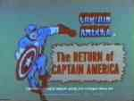
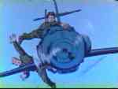
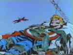
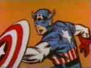
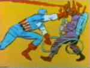
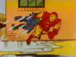
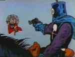

|
|
Animated Series of

  Coming in at a very close second to the most hideously obnoxious, yet wonderfully infectious, comic book cartoon theme song is the overture to Captain America! Feel free to sing along!
Like I said, a close second, coming in right behind the theme to the '60s Spider-Man cartoon. Spider-Man! Spider-Man! Does whatever a spider can... - - - - Our first episode, The Return of Captain America, opens in the depths of the Atlantic Ocean as a hi-tech sub searches the murky depths. Manning the sub are Earth's mightiest collection of heroes (well, this Earth anyway), The Avengers: Iron Man, Thor, Giant Man and the Wasp. Thor spots something, that looks like a body, floating in the water. Giant Man is able to retrieve it and hauls it inside. The Wasp recognizes him as the star-spangled World War II hero Captain America, but he's been missing for almost twenty years. Suddenly, the soggy figure jerks awake shouting, hysterically, for someone named Bucky. The Avengers manage to subdue him but only after he stops struggling. The man is starting to remember what happened. Captain America and his partner Bucky, were trying to prevent a drone rocket filled with explosives from launching. They were too late and race after it on a motorcycle. They both leap for it. Bucky manages to hang on but Cap couldn't and falls towards the ocean below. Bucky detonates the rocket drone and is engulfed in the explosion. It's the last thing Cap sees before splashing down. It's also the last thing he remembers. They introduce themselves and explain that war has been over for a while and the allies won. But there is still a need for those who would fight the good fight, for freedom and justice, so the Avengers invite Cap to join their ranks. He accepts and celebrates by taking a nap. Captain America spent the time after Bucky's death, at the close of the second World War to present time, in a state of suspended animation frozen in a block of ice. After falling off the drone, he landed in the frozen North Atlantic. Somehow, his super-soldier serum enhanced body allowed him to survive. Jump ahead twenty years. The Avengers were out in the sub looking for none other than the Sub-Mariner, who'd been causing trouble recently with the surface world. The Sub-Mariner came upon an Eskimo fishing village who worshiped a shadowy "god" frozen deep in a block of ice. Not to be outdone by a frozen deity, Namor chucked the entire block of ice into the ocean. The mini-iceberg was lucky enough to get caught in a warm current and drifted south, thawed out and it's formerly encased prisoner was fortunate enough to be discovered by the Avenger's sub just in the nick of time. So that's how Cap happened to be in the ocean.
RETURN TO THE CAPTAIN AMERICA'S INTRODUCTION PAGE
|